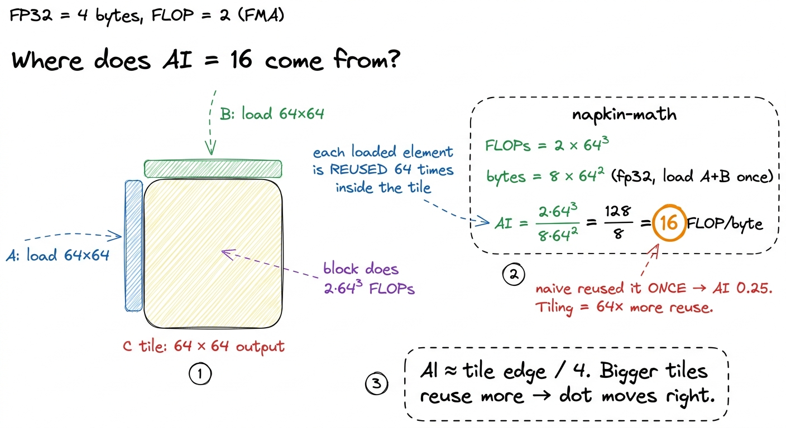
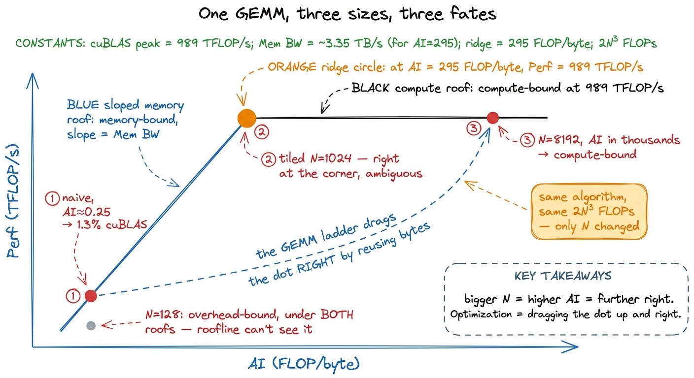
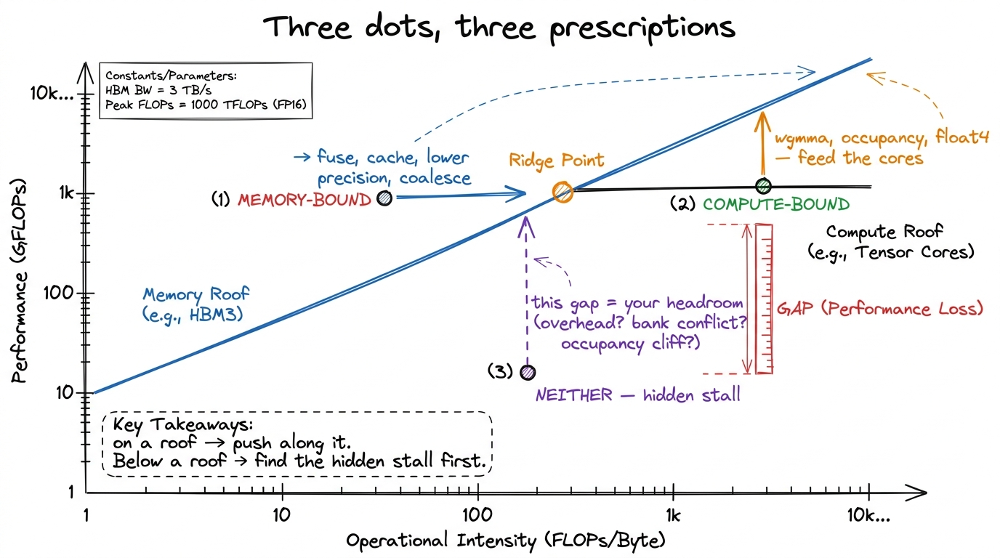
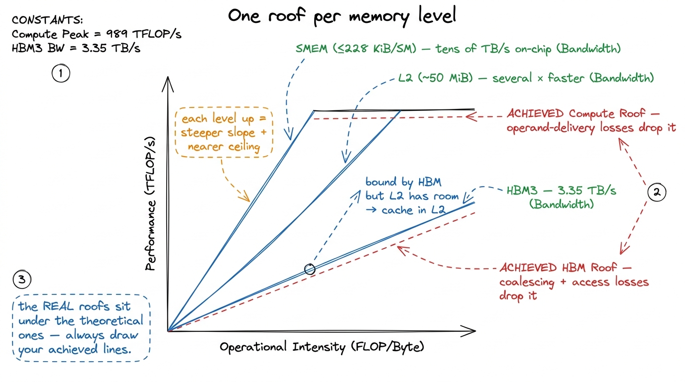
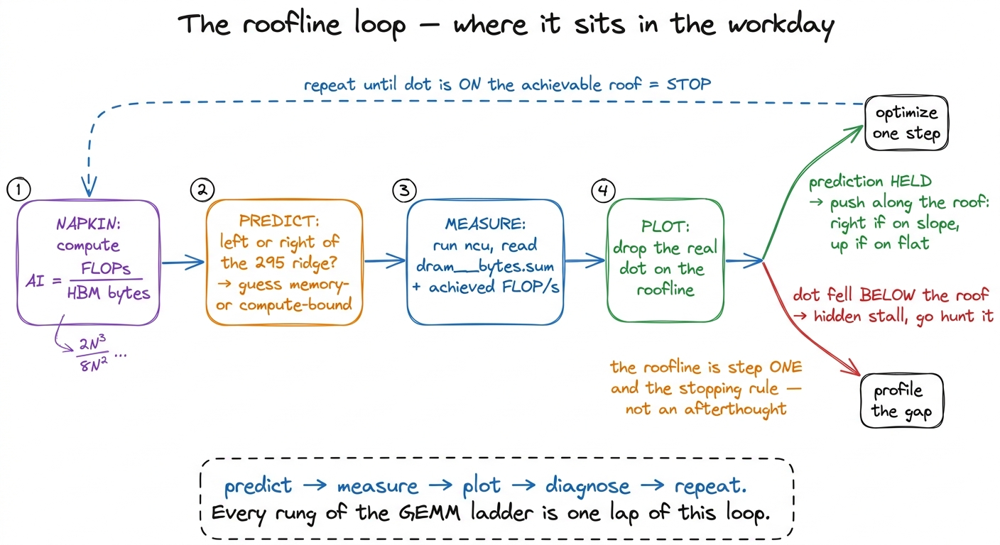

The roofline model in practice ROOFLINE
Every kernel you will ever write does two things: it moves bytes and it does math. That is the whole job. And there is one chart that takes those two activities, plots them against each other, and tells you — before you have run a single profiler — whether your kernel has any chance of being fast, and if not, exactly which wall is stopping it. That chart is the roofline model, and by the end of this article you will be able to draw it from memory, drop any kernel onto it, and read its fate off the axes.
I want to build it slowly, from nothing. We will start with two numbers printed on an H100 datasheet, turn them into a chart with two lines, and then spend the rest of the article learning to read that chart — because the reading is where all the value is. Along the way we will plot a real matrix multiply on it at three different sizes and watch the same algorithm change its identity. And near the end I will show you the roofline being wrong, because the honest roofline — the one with the roofs sitting lower than the datasheet promised — is far more useful than the pretty textbook one.
The question this article answers is simple to state and surprisingly deep to answer: given a kernel, what is the fastest it could possibly run on this GPU, and am I close to that limit yet?
First, the one imbalance that makes all of this necessary
Before the chart, we need the fact that motivates the chart. Modern GPUs can do arithmetic far faster than they can fetch the numbers to do arithmetic on. That sentence is the seed of everything.
Let me make it concrete with the easiest hardware to reason about, the A100, because its numbers are round.1 I use the A100 for the first intuition because its figures are clean and widely quoted. Every idea transfers directly to the H100 and B200 — the imbalance only gets worse on newer chips, which is the whole point of the last section. See what changed across A100 → H100 → B200. An A100 can perform about 19.5 trillion FP32 operations per second on its CUDA cores. In that very same second it can pull about 1.5 trillion bytes from its main memory. Numbers are 4 bytes each in FP32, so 1.5 TB/s is about 400 billion numbers per second arriving.
Put those side by side. In one second the chip can compute on 19.5 trillion values but can only fetch 400 billion of them. That is a ~50× gap. For every single number the memory system delivers, the arithmetic units are hungry for about fifty operations before the next number shows up.
Here is the mental model I want you to carry through the entire article, borrowed from Horace He's "making GPUs go brrr" essay. Think of the GPU as a factory next to a warehouse.
- The factory floor is the compute — fast, expensive, always hungry for raw material.
- The warehouse is main memory (HBM) — where all the data actually lives.
- The trucks driving between them are the memory bandwidth.
 figure rendering · The core imbalance in one picture: the factory (compute) is far faster
figure rendering · The core imbalance in one picture: the factory (compute) is far fasterNow the whole game has a name. If your factory floor is sitting idle waiting for trucks, you are memory-bound — the trucks are your bottleneck. If your trucks are keeping up and the factory floor is the thing running flat-out, you are compute-bound — the machines are your bottleneck. The roofline model is nothing more than a way to see, at a glance, which of these two situations you are in and how much room you have left. Everything below is just that idea, made precise.
Two numbers, one chart
Now let's build the actual chart, and let's use the H100 because that is what people actually deploy on today (vLLM, FlashAttention, DeepSeek — all of it runs on H100 fleets right now).
An H100 SXM5 gives you two hard ceilings. The first is peak compute: about 989 TFLOP/s of BF16 through the tensor cores, in the realistic sparsity-free regime.2 The marketing slide says ~1979 TFLOP/s. That number assumes 2:4 structured sparsity, which you almost never have in a dense GEMM. Draw the roofline with the sparse peak and it will lie to you about your headroom, so I always use the dense number. The second is peak memory bandwidth: about 3.35 TB/s from HBM3. Every kernel on this chip lives underneath both of these ceilings — the question is only which one it bumps into first.
The roofline plots achievable throughput (FLOP/s, on the y-axis) against a quantity called arithmetic intensity (AI) on the x-axis. Arithmetic intensity is the ratio at the heart of the factory analogy: how many FLOPs you perform per byte you move to and from HBM.
FLOPs performed
AI = ─────────────────────────────
bytes moved (loads + stores)That is the "how many things does the factory build per box the truck delivers" number. A high-AI kernel makes good use of every delivered byte; a low-AI kernel barely touches each byte before demanding the next one. We derive AI carefully in its own article — this piece is the chart, that one is the arithmetic — so if the ratio feels slippery, read arithmetic intensity alongside this.
Both axes of the roofline are log scale, and that log-log framing is what makes the model click into place. Here is how the two ceilings turn into two lines:
- The compute ceiling is a flat horizontal line at 989 TFLOP/s. No matter how much data you reuse, the tensor cores physically cannot go faster than that. It is a wall in the sky.
- The bandwidth ceiling is a sloped line rising from the origin. Why sloped? Because if bytes are your bottleneck, the FLOP/s you can sustain is exactly
AI × bandwidth. Feed the chip more FLOPs per byte and it delivers proportionally more FLOP/s — the line climbs. Until, that is, it hits the flat compute roof and can climb no higher.
 figure rendering · The roofline is two ceilings: a sloped bandwidth roof and a flat compu
figure rendering · The roofline is two ceilings: a sloped bandwidth roof and a flat compuTake a moment to notice something beautiful about this chart: it is entirely a property of the hardware. We have not mentioned a single kernel yet. Those two lines are fixed the moment you pick a GPU. Any kernel you ever write is just a dot that lands somewhere in this plane, and the roofline is the fence it can never climb over.
The ridge point is the whole model
The two roofs cross at exactly one spot, and that spot is the only number you truly need to memorize. Divide peak compute by peak bandwidth:
ridge = 989e12 FLOP/s / 3.35e12 byte/s ≈ 295 FLOP/byteThat ridge point — roughly 295 FLOPs per byte — is the arithmetic intensity at which the sloped memory roof finally catches up to the flat compute roof. Why is this one number so powerful? Because it cleanly partitions every kernel that could ever exist into two worlds:
- If your kernel's AI is below 295, you hit the sloped roof first. You are memory-bound. Your absolute ceiling is
AI × 3.35 TB/s, which is well short of the tensor cores' peak — the factory is starving. - If your kernel's AI is above 295, you hit the flat roof first. You are compute-bound. The wall is 989 TFLOP/s and the trucks are keeping up fine.
Let me pause on how brutal that ridge is, because this is genuinely surprising the first time you see it. Two hundred and ninety-five FLOPs per byte. If you do fewer than 295 operations on each byte you pull from memory, the H100 cannot run your kernel at full compute speed — full stop. Most kernels people write are nowhere near that. An elementwise add does one FLOP per eight bytes. That is an AI of 0.125 — more than two thousand times below the ridge.3 Two subtleties on the word "bytes" here. First, the bytes in AI are bytes moved to and from HBM, not bytes merely touched — data served from L2 or shared memory doesn't count against you, which is exactly why caching raises your effective AI. Second, the ridge moves if your math isn't on the tensor cores: for plain FP32 CUDA-core GEMM the compute roof is far lower (~67 TFLOP/s on H100), so the ridge sits at a much smaller AI.
Now watch the ridge itself move across GPU generations, because this quietly reshapes what "fast" means every couple of years. To compare honestly we have to stay on the tensor cores for both chips — apples to apples.
- A100: ~312 TFLOP/s dense BF16 paired with ~1.5 TB/s → ridge near
210FLOP/byte. - H100: ~989 TFLOP/s paired with ~3.35 TB/s → ridge at
~295FLOP/byte.
Compute roughly tripled while bandwidth roughly doubled, so the ridge climbed by about a third in a single generation.4 Watch the precision domain when you quote ridge points — it is the easiest way to fool yourself. The A100's FP32 CUDA-core ridge is only ~13 FLOP/byte (19.5 TFLOP/s ÷ 1.5 TB/s), an order of magnitude below its tensor-core ridge. Comparing one chip's CUDA-core ridge against another's tensor-core ridge is apples-to-oranges and will wildly overstate the shift.
 figure rendering · Because compute grows faster than bandwidth, the ridge point drifts ri
figure rendering · Because compute grows faster than bandwidth, the ridge point drifts riThat last callout is worth sitting with. The compute-bound club keeps getting harder to join. A kernel that was comfortably compute-bound on an A100 can become memory-bound on an H100 while doing literally nothing different — the chip changed underneath it. This is not a footnote; it is the central trend that makes memory optimization (fusion, caching, lower precision) more valuable every year, and it is the roofline making that trend concrete and undeniable.
Plotting a real kernel: GEMM at three sizes
Abstractions are cheap. Let me put an actual matrix multiply on the chart and watch it move, because seeing one algorithm land in different regimes is the moment the roofline stops being a diagram and becomes a tool.
Take a square matrix multiply, C = A · B, where all three are N × N. First the two ingredients of every dot:
- FLOPs. Each output element is a dot product of length
N:Nmultiplies andNadds, so2NFLOPs. There areN²outputs. Total:2N³FLOPs. This is fixed — it is just the definition of matrix multiply. - Bytes. This is the part that is not fixed, and it is the entire story of kernel optimization. It depends completely on how much you reuse each byte you load.
Let me do the two extremes by hand.
The naive kernel reuses nothing. In the naive GEMM, each thread computes one output C[i,j] by reading a full row of A and a full column of B straight from HBM. That is 2N numbers loaded to produce 2N FLOPs. In FP32 (4 bytes) the naive AI works out to about 2N / (8N) ≈ 0.25 FLOP/byte. That is roughly 1200× below the H100 ridge. On the roofline it plots as a dot pinned to the far bottom-left of the sloped roof, and its ceiling is 0.25 × 3.35 TB/s ≈ 0.8 TFLOP/s — a rounding error next to 989. This is why the naive kernel measures at a humiliating ~1.3% of cuBLAS: the roofline predicted the disaster before we ever launched ncu.
The tiled kernel reuses aggressively. Now stage tiles of A and B into shared memory and reuse each loaded element across an entire block. Consider computing a 64 × 64 output tile with a 16 × 16 thread block. You load on the order of 8 × 64² bytes from HBM but perform 2 × 64³ FLOPs against them. Run the fraction:
AI = (2 × 64³) / (8 × 64²) = (2 × 64) / 8 = 16 FLOP/byteSixteen FLOPs per byte — sixty-four times the naive 0.25. On the H100 ridge of 295 that is still memory-bound, but on the A100's CUDA-core ridge of 13 it has crossed into compute-bound. The dot has leapt rightward across the chart. And crucially, nothing about the math changed — we did the exact same 2N³ FLOPs. We only changed how many times we reused each loaded byte.5 This is why the biggest single jump on the GEMM ladder is the shared-memory kernel: the win isn't from doing less math, it's from moving the dot right on the roofline by loading each byte once and reusing it 64 times. Every later rung — register tiling, vectorization, warptiling — is a further nudge in the same direction. See the GEMM ladder recap.

figure rendering · Zooming into one 64×64 tile and doing the arithmetic by hand: reusingNow the payoff — the same GEMM at three problem sizes, because AI grows with N for a well-tiled kernel:
N = 128. The whole problem is tiny. Even fully tiled, there isn't enough work to fill the H100's 132 SMs, so you spend your time on kernel launch and tail effects. The kernel is overhead-bound — a regime the roofline doesn't even draw, because it lives below both roofs. The dot floats sadly under the slope, achieving a fraction of what its AI would permit. (This is Horace's third regime; the roofline sees compute and memory but is blind to launch overhead. See the three regimes.)N = 1024. Now there is real work. A well-tiled kernel has AI in the hundreds and lands near the ridge. This is the interesting, ambiguous zone: you are neither cleanly memory- nor compute-bound, and small changes to tile shape can swing you across the ridge in either direction.N = 8192. The AI is now in the thousands of FLOP/byte, far to the right of the ridge. The kernel is emphatically compute-bound; its dot is pressed flat against the 989 TFLOP/s roof. Every remaining percent of cuBLAS here comes from feeding the tensor cores better, never from touching memory.

figure rendering · The same GEMM plots in three different regimes depending only on N. OpReading the chart: which wall am I hitting?
Here is where the roofline pays for itself. Once you have plotted your kernel's measured (AI, FLOP/s) dot, the diagnosis is almost embarrassingly mechanical. Look at where the dot sits relative to the two roofs. There are exactly three cases.
Case 1 — the dot sits on the sloped roof, left of the ridge. You are memory-bound. Your ceiling is the slope, and there is only one direction that helps: move the dot right by raising AI. Concretely that means moving fewer bytes per FLOP — fuse operations so you don't round-trip intermediates through HBM, cache in shared memory and registers, use lower precision so each number is smaller, and coalesce your memory accesses so every transaction is fully used. Reaching for faster math here does nothing — the tensor cores are already sitting idle, waiting on trucks.
Case 2 — the dot sits under the flat roof, right of the ridge. You are compute-bound. Raising AI further is pointless; you are already past the corner where it would help. The only direction that matters now is up — get closer to 989 TFLOP/s by keeping the tensor cores fed every cycle. That means the wgmma async path, enough occupancy to hide latency, the right precision, and vectorized loads (float4) so instruction issue isn't the thing choking you.
Case 3 — the dot sits well below whichever roof is above it. Not on the slope, not near the flat, just floating in the empty middle. Then you are neither — you have a hidden problem the roofline can't directly see: overhead, an occupancy cliff, a stray copy, a bank conflict, a stall. That vertical gap between your dot and the roof above it is your remaining headroom, and it is the single most honest number in all of performance work.

figure rendering · The reading rule in one picture. On the slope: move right. On the flatThere is a lovely shortcut for the y-coordinate of your dot that needs no profiler at all: measure your achieved FLOP/s and divide by peak. If you're running at 80% of peak FLOP/s, you are — by definition — at least 80% compute-bound, and the roofline is telling you to go home. If you're at 3% of peak, the flat roof is simply irrelevant to you; you live on the slope, and every ounce of effort belongs there.6 A practical trap: ncu's reported "compute throughput %" and "memory throughput %" are utilization of the busiest pipe, not your position on the roofline. A kernel can show 90% memory throughput while sitting far below the bandwidth roof because it is thrashing one L2 partition. Compute AI from actual bytes moved (dram__bytes.sum) and FLOPs from the algorithm — never trust a single headline percentage. See speed-of-light thinking.
Why fusion works, straight off the chart
Let me show you the roofline paying rent on a real, everyday optimization — operator fusion — because seeing why it works turns the chart from a diagnosis tool into a design tool.
Take a chain of two elementwise operations, say x.cos().cos(). Done naively, that is two separate kernels. The first reads x from HBM and writes the intermediate back to HBM. The second reads the intermediate back and writes the final result. That is four memory round-trips for basically two FLOPs — an AI on the floor, a dot pinned to the far left of the slope. The factory does two tiny operations and then waits forever for trucks.
Now fuse the two operations into one kernel: read x once, compute both cosines while the value is sitting in a register, write the result once. Two memory operations instead of four. You just halved the bytes without changing the FLOPs, which doubled the AI and dragged the dot rightward — and for a memory-bound kernel on the slope, doubling AI doubles achievable FLOP/s. A clean ~2× speedup with zero change to the math. That is why in a real transformer the activation function (GELU vs ReLU) barely matters for runtime — fused into the surrounding matmuls, the extra math is essentially free because you were waiting on memory anyway.7 A startling stat from Horace's essay: in BERT, the non-matmul operations (layernorm, activations, dropout) are only ~0.2% of the FLOPs but eat a wildly disproportionate share of the time — precisely because they are memory-bound elementwise ops living on the far-left slope while the matmuls sit comfortably on the compute roof. Fusion is how you claw that time back.
This is the roofline as a design tool: it doesn't just tell you where you are, it tells you which move (right vs up) can possibly help, so you never waste a week optimizing the wall you already hit.
When the roofline lies — and when to stop
Here is the part I promised at the start, the part most tutorials skip: the roofline is a model, and every model has a domain where it stops being true.
The clean version we drew assumes you can actually reach peak bandwidth and peak compute. You usually can't. HBM3's 3.35 TB/s assumes perfect coalescing and both L2 partitions balanced across the crossbar; a strided or partition-camped kernel achieves only a fraction of it. So your effective memory roof is lower than the drawn one, which means your real ridge actually sits further to the left. Likewise the 989 TFLOP/s compute roof assumes the tensor cores never stall waiting for operands, which requires the whole shared-memory-and-register pipeline to keep up. When it doesn't, your effective compute roof drops too.
The honest engineer therefore draws two extra lines: an achieved-bandwidth line and an achieved-compute line, both dashed, both sitting underneath the theoretical roofs. Your dot is judged against those dashed lines, not the datasheet fantasy above them.
And there is one more refinement that turns the roofline from a single chart into a family of them: the hierarchical roofline. HBM is not the only place bytes come from. There is L2 cache, and there is shared memory, and each is far faster than the one below it. So you don't get one sloped roof — you get one per memory level.

figure rendering · The hierarchical roofline: HBM, L2, and shared memory each get their oRead the hierarchical roofline like this: a kernel bound by the HBM slope but sitting well under the L2 slope is telling you, in plain language, to cache in L2. A kernel bound by the L2 roof but under the shared-memory roof wants shared memory. Each level up is a steeper slope and a nearer ceiling, and your dot's position tells you exactly which rung of the memory hierarchy to fight on next.
Now the most important consequence of all this, the thing that separates engineers who ship from engineers who grind forever: the roofline is a stopping rule, not a to-do list. The question is never "could this kernel be faster in the absolute?" It is "is there any roof left above my dot?" When your dot is pressed flat against the achievable compute roof at large N, you are done — cuBLAS itself is sitting on that very same line, and the last few percent between you and it are engineering polish, not algorithmic wins.
Concretely: the warptiled GEMM reaching 93.7% of cuBLAS is sitting on the flat compute roof. That remaining 6.3% is not another regime to conquer — it is the asymptote. Knowing that saves you from the classic failure mode, the one I have fallen into myself: grinding for a week on the wall you already hit, while the other wall — the one with actual headroom above it — goes completely untouched.
So the loop is always the same, and the roofline is the first step of it, not an afterthought. Before I write a kernel I compute its AI on a napkin, find where it lands relative to the 295 ridge, and predict the regime. Then I measure, plot the real dot, and see how far below the roof it fell. When the prediction holds, I understand the kernel and I know which direction to push. When it doesn't, the gap is a lead — a hidden stall to go hunt down. And then it's onto the GEMM ladder for real, where every single rung turns out to be exactly this chart, with the dot one step higher and one step to the right.

figure rendering · The roofline as a repeating workflow, not a one-off chart: napkin-pred